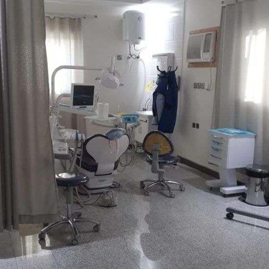

قسم طب الفم والأسنان
للأسنان أهميةٌ كبيرةٌ في حياة الإنسان ومن أهمها: أنّها تستخدم لمضغ الطعام وتفتيته إلى قطعٍ صغيرةٍ ليسهل وصوله
إلى المعدة من أجل الاستفادة منه، فهناك الكثير من الأشخاص وخاصّة الأطفال يُعانون من سوء التغذية لعدم قدرتهم على
مضغ الطعام بسبب مشاكل في أسنانهم، كما تساعد الأسنان على النطق والكلام بالشكل السليم، فالكثير ممن لديهم مشاكل
في أسنانهم يُعانون من التأتأة في الكلام، أو عدم القدرة على إخراج الحرف بشكله الطبيعيّ؛ لذا تعتبر الأسنان
وسيلةً مساعدةً للسان في النطق السليم، فهي جزءٌ من جهاز النطق في الجسم، حيثُ توجد الكثير من الحروف التي من ضمن
مخارجها الأسنان كحرف الثاء، والدال وغيرها. ناهيك عن المظهر الجمالي لها، حيثُ تعتبر الابتسامة الجميلة، والأسنان
المصفوفة والبيضاء من مقوّمات الجمال لدى الكثير من الأشخاص حول العالم إضافة إلى أهميتها في تقوية الشخصية وزيادة
الثقة بالنفس، فغالباً ما تُسبّب الأسنان غير الجميلة كآبةً وحالةً مزاجية متقلبة للشخص